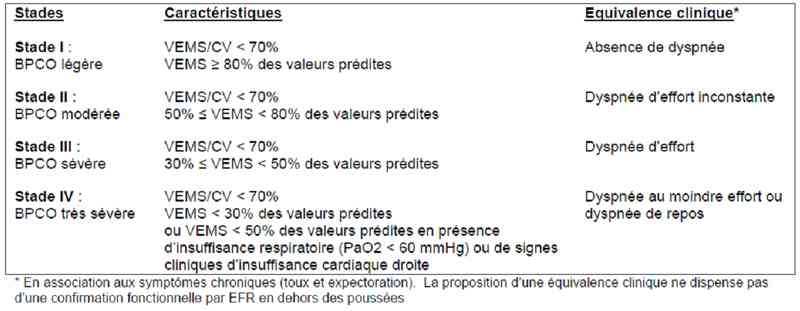
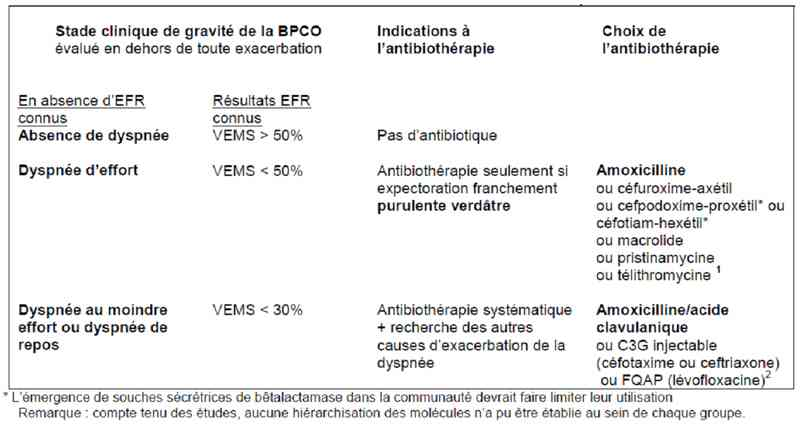
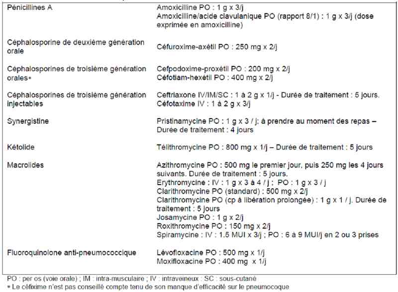
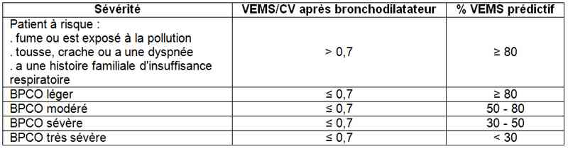

Bienvenue Sur Medical Education
BPCO
Spécialité : pneumologie /
Points importants
-
Définition de la BPCO :
-
maladie chronique, lentement progressive, à composante inflammatoire locale et systémique, des bronches et des poumons entraînant une diminution peu voire non réversible des débits expiratoires
-
essentiellement liée au tabac
-
elle englobe la bronchite chronique, l'emphysème, une insuffisance respiratoire
-
En France :
-
3 millions de fumeurs toussent et crachent à cause du tabac
-
1 million ont une altération de la fonction respiratoire (BPCO)
-
60 000 ont un besoin d'apport en oxygène (insuffisance respiratoire)
-
15 000 meurent chaque année de BPCO (3ème cause de mortalité par maladies, après les cancers et les maladies vasculaires). Cette mortalité est en pleine croissance
-
La décompensation de BPCO est très fréquente, affectant environ 20 % des patients (1,3 épisodes/an chez les patients ayant un VEMS entre 40 et 45 %)
Présentation clinique / CIMU
SIGNES FONCTIONNELS
-
Dyspnée progressivement croissante
-
Douleur thoracique
-
Fièvre
-
Notion d'hémoptysie
-
Bronchite chronique :
-
toux fréquente et expectorations
-
infection pulmonaire récurrente et fréquente
-
oedèmes d'apparition progressive, prise de poids
-
Emphysème :
-
longue histoire de dyspnée progressive avec apparition tardive d'une toux non productive
-
rechutes mucopurulentes occasionnelles
-
cachexie
CONTEXTE
- maladie chronique, lentement progressive, à composante inflammatoire locale et systémique, des bronches et des poumons entraînant une diminution peu voire non réversible des débits expiratoires
- essentiellement liée au tabac
- elle englobe la bronchite chronique, l'emphysème, une insuffisance respiratoire
- 3 millions de fumeurs toussent et crachent à cause du tabac
- 1 million ont une altération de la fonction respiratoire (BPCO)
- 60 000 ont un besoin d'apport en oxygène (insuffisance respiratoire)
- 15 000 meurent chaque année de BPCO (3ème cause de mortalité par maladies, après les cancers et les maladies vasculaires). Cette mortalité est en pleine croissance
Présentation clinique / CIMU
SIGNES FONCTIONNELS
- Dyspnée progressivement croissante
- Douleur thoracique
- Fièvre
- Notion d'hémoptysie
-
Bronchite chronique :
- toux fréquente et expectorations
- infection pulmonaire récurrente et fréquente
- oedèmes d'apparition progressive, prise de poids
-
Emphysème :
- longue histoire de dyspnée progressive avec apparition tardive d'une toux non productive
- rechutes mucopurulentes occasionnelles
- cachexie
CONTEXTE
Terrain
- Plus souvent les hommes
- Age > 40 ans
- Patient obèse (bronchite chronique) ou mince avec un thorax en tonneau (emphysémateux)
- Tabac +++
Traitement usuel
- Bêta-2 agonistes de courte et longue durée d'action
- Corticoïdes
- Oxygénothérapie à domicile
Circonstances de survenue
- Cherchez le facteur déclenchant
EXAMEN CLINIQUE
- Utilisation des muscles respiratoires accessoires
- Orthopnée
- Contraction des sternocléidomastoïdiens
- Sueurs
- Parole impossible
- Oedème des membres inférieurs
- Cyanose
Bronchite chronique ("blue bloater")
- Patient au teint bleu
- Ronchi et sibilants
- Signes d'insuffisance cardiaque droite
Emphysémateux ("pink puffer")
- Patient au teint rouge
- Lèvres pincées
- Thorax tympanique avec assourdissement des bruits du coeur
- Sibilants
Signes de gravité
- Troubles de la vigilance
- Pauses respiratoires
- Silence auscultatoire
- Respiration paradoxale (balancement thoraco-abdominal)
- État de choc
Stades de BPCO selon GOLD (Global Initiative for Chronic Obstructive Lung Disease)
 _870 Tableau Stades de BPCO
EXAMENS PARACLINIQUES SIMPLES
DEP diminué (contrairement à un patient en OAP)
VEMS diminué ainsi que le rapport de Tiffeneau (VEMS/CV)
SpO2
ECG
- Eventuels signes d'ischémie
- Elimine une pathologie d'origine cardiaque
Signes paracliniques
BIOLOGIQUES
Gaz du sang (acidose respiratoire avec pH < 7,30)
NFS (polycythémie)
IMAGERIE
Radio de thorax
-
Bronchite chronique :
- cardiomégalie
- augmentation de la trame bronchovasculaire
-
Emphysème :
- coeur de taille normale
- hyperinflation avec, sur le profil, un diamètre antéro-postérieur augmenté, un espace rétrosternal augmenté, une horizontalisation des côtes
- coupoles diaphragmatiques aplaties
- possibles bulles
- diminution de la trame vasculaire intraparenchymateuse pulmonaire
Diagnostic étiologique
-
Infection de l'arbre trachéo-bronchique
-
Pollution atmosphérique
-
Dans 30 % des cas, la cause ne peut être identifiée
Diagnostic différentiel
-
OAP :
-
DEP normal
-
BNP augmenté
-
SDRA
-
Infarctus du myocarde
-
Pneumopathie
-
Pneumothorax
-
Pneumomédiastin
-
Embolie pulmonaire
Traitement
TRAITEMENT PREHOSPITALIER / INTRA HOSPITALIER
Diagnostic différentiel
-
OAP :
- DEP normal
- BNP augmenté
- SDRA
- Infarctus du myocarde
- Pneumopathie
- Pneumothorax
- Pneumomédiastin
- Embolie pulmonaire
Traitement
TRAITEMENT PREHOSPITALIER / INTRA HOSPITALIER
Stabilisation initiale
- Oxygénothérapie qsp SpO2 à environ 90%
- Nébulisations de beta2mimétiques et anticholinergique 3 fois dans la première heure, en cas de sibilants
-
Ventilation non-invasive en aide inspiratoire si :
- FR > 25/min
- SpO2 < 90%
- acidose respiratoire (pH < 7,35 – PaCO2 > 45 mmHg)
- Intubation et ventilation mécanique si altération de la conscience
Suivi du traitement
- Antibiotiques si besoin
- Traitement du facteur déclenchant
MEDICAMENTS
Bêta-2 agonistes
- Terbutaline ou salbutamol
Anticholinergique
- Bromure d'ipratropium 0,5 mg en association avec les bêta-2 agonistes
Sulfate de magnésium
- 1-2 g IV en 15 min
Corticoïdes
- Méthyl prednisolone : 1 mg/kg/6h
Antibiotiques
- Seulement si purulence verdâtre des expectorations, si le patient est habituellement dyspnéique
- Amoxicilline/acide clavulanique ou C3G injectable (céfotaxime ou ceftriaxone) ou Fluoroquinolone (lévofloxacine)
- Antibiothérapie
 _871 Tableau Antibiothérapie et exacerbation de BPCO
- Doses des antibiotiques
 _872 Tableau Doses des antibiotiques dans la BPCO
- Les patients sont souvent colonisés par l'haemophilus influenzae, le streptococcal pneumoniae mais aussi le pneumocoque, legionellae, les Gram négatifs. Cependant, dans au moins la moitié des cas, l’infection peut être virale
Surveillance
CLINIQUE
-
Gaz du sang toutes les heures
-
SpO2, FR, PA, FC/h
Devenir / orientation
CRITERES D'ADMISSION
Devenir / orientation
CRITERES D'ADMISSION
En réanimation
- Tous patients nécessitant de la VNI voire l'intubation et la ventilation contrôlée
En UHCD
- Tous patients sans critère de gravité mais nécessitant une surveillance de 24 heures au moins
CRITERES DE SORTIE
- Sont très rares
- Patient à exacerbation peu sévère
RECOMMANDATIONS DE SORTIE
- Bien informer sur les méfaits du tabac et de l'importance de son arrêt
- Le patient doit appeler dès les premiers signes d'exacerbation
- Prendre quelques minutes pour lui apprendre à utiliser un nébuliseur
- Pas d'anti-tussif
-
Vaccinations antigrippale et anti-pneumococcique
Mécanisme / description
-
La BPCO englobe 3 processus que sont la bronchite chronique, l'emphysème et l’insuffisance respiratoire
-
L'évolution de la BPCO est caractérisée par l'accumulation de sécrétions muqueuses inflammatoires au niveau de la lumière des petites voies aériennes et par leur paroi très fine. Cette paroi est progressivement infiltrée par des cellules immunes inflammatoires (polynucléaires, mononucléaires, cellules T CD4)
-
Le tabac limite la réponse immune. Ce processus peut continuer chez les patients sensibles même après l'arrêt du tabac, avec accumulation de cellules du système immunitaire, fibrose, hypersécrétion muqueuse
-
La BPCO se caractérise par une limitation irréversible du débit expiratoire forcé. Cela peut être le résultat d'une destruction du tissu pulmonaire diminuant ainsi son élasticité et d'une augmentation des résistances au niveau des voies aériennes
-
La sévérité de la BPCO est fonction du pourcentage de VEMS et du rapport VEMS/CV après inhalation de bronchodilatateur
 _748 Tableau Classification spirométrique de la BPCO
La bronchite chronique
- Elle est définie par une production excessive de mucus avec obstruction des voies aériennes et par une hyperplasie glandulaire
- La destruction de l'endothélium altère la réponse mucociliaire qui élimine les bactéries et les mucus
- L'inflammation et les sécrétions sont les composants de la partie obstructive
- Contrairement à l'emphysème, la bronchite chronique contient un lit capillaire pulmonaire relativement intact
- La réponse physiologique est une baisse de la ventilation et une augmentation du débit cardiaque
- L'altération des rapports ventilation/perfusion est secondaire à la circulation vasculaire préférentielle au niveau des zones peu ventilées induisant ainsi une hypoxémie et une polycythémie
L'emphysème
- Il est défini par la destruction des voies aériennes distales
- Destruction progressive des septa alvéolaires et du lit capillaire pulmonaire induisant une diminution des capacités d'oxygénation du sang
- La réponse de l'organisme est une diminution du débit cardiaque et une hyperventilation
- L'altération des rapports ventilation/perfusion est due à une limitation du débit sanguin au niveau des zones bien oxygénées. Il n'y a donc pas d'altération gazométrique ni des pressions intrapulmonaires
Bibliographie
-
Kleinschmidt P. Chronic Obstructive Pulmonary Disease and Emphysema. http://emedicine.medscape.com/article/807143-overview
-
Agence Française de Sécurité Sanitaire des Produits de Santé. Antibiothérapie par voie générale dans les infections respiratoires basses de l’adulte (pneumonie aiguë communautaire et exacerbations de Bronchopneumopathie Chronique Obstructive) Juillet 2010. http://www.afssaps.fr/var/afssaps_site/storage/original/application/b33b6936699f3fefdd075316c40a0734.pdf
Auteur(s) : Patrick PLAISANCE